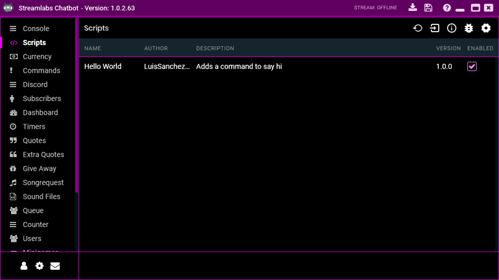
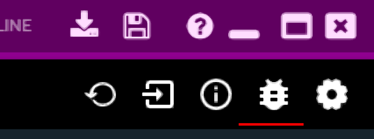

Create your first Streamlabs Chatbot script
There are a lot of scripts already made by the Streamlabs Chatbot community in their discord server or by independent developers, but sometimes they don’t work exactly how you want them to or the functionality you need hasn’t been coded yet. In this case you can create your first Streamlabs Chatbot script to understand how they work and implement your desired functionality.
When you finish this post you will have a simple Hello World script that greets everyone who uses the !hello command. With this script as a base you can start creating your own custom scripts tailored to your exact needs.
Download
You can download the script to follow along from here (direct download) or here (support the blog).
Prerequisites
To start creating your first script for Streamlabs Chatbot you need to meet these prerequisites:
- Basic Python 2.7 programming language knowledge
- Have your Streamlabs Chatbot set up to run scripts
Don’t get discouraged if you don’t know the programming language that well yet, you can follow along with basic understanding of Python.
Folder location and structure
When you install a script it gets uncompressed and is copied to the Streamlabs Chatbot folder, to access this folder you just go to the Scripts tab, right click on the window and select the Open Scripts Folder option. This will open the folder where all the scripts are, if the Streamlabs Chatbot was installed in the default location this will open the %APPDATA%\Streamlabs\Streamlabs Chatbot\Services\Scripts folder.
Inside this folder each subfolder is a script and inside them are the script files as follows:
%APPDATA%\Streamlabs\Streamlabs Chatbot\Services\Scripts\
├── MyScript\
│ ├── MyScript_StreamlabsSystem.py
│ ├── UI_Config.json
│ ├── config.js
│ └── config.json
└── My2ndScript\
└── ...- MyScript_StreamlabsSystem.py – This file is where all your code will be, for Streamlabs Chatbot to detect the file as a script you need to add
_StreamlabsSystem.pyto the filename. To make a script named "Hello World" we would name the file `HelloWorld_StreamlabsSystem.py - UI_Config.json – In this file is where you set your script’s user interface to have configurable options in your script like a different command, a cooldown, etc. This file is not required for the script to work so we will skip it in this post.
- config.js and config.json – These files are automatically generated when clicking the
SAVE SETTINGSbutton inside the Streamlabs Chatbot configuration interface. Since we are not using theUI_Config.jsonfile, we won’t use these neither.
Creating the script
We will create a Hello World script which will greet everyone who uses the !hello command with the Hello user! message, where the user is the username.
Creating the script folder
Since the script name is Hello World we will create a HelloWorld folder with a HelloWorld_StreamlabsSystem.py file in it as follows:
%APPDATA%\Streamlabs\Streamlabs Chatbot\Services\Scripts\
└── HelloWorld\
└── HelloWorld_StreamlabsSystem.pyRequired variables and functions
All the scripts require these 5 variables and 3 functions in order to be detected by the Streamlabs Chatbot.
Required variables
The required variables are self explanatory:
ScriptName = "Hello World"
Description = "Adds a command to say hi"
Creator = "LuisSanchezDev"
Version = "1.0.0"
Website = "https://luissanchezdev.com/"Required functions
These functions are required in order for the script to be detected, even if they don’t do anything.
def Init():
pass
def Execute(data):
pass
def Tick():
pass- Init – Function to initialize your script.
- Execute – This function runs everytime you receive a message, the
dataparameter contains all the information for that message. - Tick – This function behaves like a loop and is ran constantly, it is mostly used for delays
Writing the script
The first step is to write all the required stuff inside the HelloWorld_StreamlabsSystem.py and check if the Streamlabs Chatbot detects it.
ScriptName = "Hello World"
Description = "Adds a command to say hi"
Creator = "LuisSanchezDev"
Version = "1.0.0"
Website = "https://luissanchezdev.com/"
def Init():
pass
def Execute(data):
pass
def Tick():
passNow reload the scripts to see the new script appear in the list.

If it doesn’t appear, take a look in the errors list to check if you didn’t miss anything.

The script is now detected by Streamlabs Chatbot but right now it is deactivated, if the user doesn’t activate your script, the Execute and Tick functions won’t run, only the Init function will.
The next step is to add the !hello command to the script. The Execute function runs whenever you receive a chat message, a whisper or a discord message. Since we only want to run when we receive a chat message we have to do the following:
def Execute(data):
if not data.IsChatMessage():
returnTo get the command from the chat message the data object has a GetParam(id) function that returns the parameter in the id position starting at 0. Since our command is the first word of the message we ask for the first parameter.
def Execute(data):
if not data.IsChatMessage():
return
command = data.GetParam(0);With the command handy, we just need to compare it with the command we want, which in this case is !hello. If the user did the command we just say hello back using the function SendStreamMessage(message) located in the global object Parent, this global object is provided by Streamlabs Chatbot.
def Execute(data):
if not data.IsChatMessage():
return
command = data.GetParam(0);
if command == "!hello":
# The user used the !hello command, we say hi back
Parent.SendStreamMessage("Hello world!")Now go back to Streamlabs Chatbot and reload the scripts, if your script didn’t show up make sure to go to the errors list to check any errors with your script.
Make sure your script is enabled and then go to the Console tab and use the !hello command, you should see the Hello world! message, if you don’t, check the errors list and find any error.
Yay! The script works! But it doesn’t do much :(. Insted of saying Hello world! we will answer with Hello user!, being user the username. For this we use the UserName attribute in the data object.
def Execute(data):
if not data.IsChatMessage():
return
command = data.GetParam(0);
if command == "!hello":
# The user used the !hello command, we say hi back
user = data.UserName
Parent.SendStreamMessage("Hello " + user + "!")Reload the scripts and use the !hello command, now the answer is Hello luissanchezdev!.
Conclusion
And you are done! You have created your first Streamlabs Chatbot script, even if it is a simple one you can expand it a lot more using Python 2.7, in case you missed something I leave you the entire HelloWorld_StreamlabsSystem.py file.
ScriptName = "Hello World"
Description = "Adds a command to say hi"
Creator = "LuisSanchezDev"
Version = "1.0.0"
Website = "https://luissanchezdev.com/"
def Init():
pass
def Execute(data):
if not data.IsChatMessage():
return
command = data.GetParam(0);
if command == "!hello":
# The user used the !hello command, we say hi back
user = data.UserName
Parent.SendStreamMessage("Hello " + user + "!")
def Tick():
passNext steps
You can learn everything about the data object in the Data Object wiki or the Parent object in the Parent Object wiki.
You can then add an user interface to your script to make it easy to configure and give it a professional look.
Leave a Comment